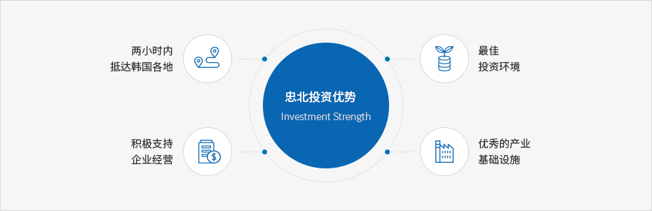

忠北投资优势
- Home
- 投资优势
- 忠北投资优势



具有到首都圈1个小时、到全国各地2个小时的生活区
配有四通八达的高速公路网
- 南、北4条线 ▶ 京釜、中部、中部内陆、中央高速公路
- 东、西3条线 ▶ 平泽~堤川、唐津~盈德、唐津~蔚珍高速公路
具备X字形的高速铁路网
- 五松站 : 全国唯一的京釜高速铁路、湖南高速铁路的分站凭借连接忠北线、中央线和太白线，与全国X轴相连
- 中部内陆线(利川-忠州-闻庆)、正在建设天安~清州之间(国际机场)的双线铁路
- 正在建设中央线(原州~堤川)的双线铁路
中部地区的据点机场—清州国际机场
- 输送吞吐量：旅客315万人次、货物38,000吨、飞行器14万班
- 运行航线：北京、上海等39条航线
※ 作为地方机场，在全国最早运行货运飞机(2011.09.23)。 - 五松站~清州国际机场大约10分钟车程(21km)
- 随着包括五松生命科学园区、KTX站区域城、世宗市等的世界城市的组建，形成大规模的城市中心，海外运行航线的需求激增
- 靠近仁川国际机场，交通方便(90分钟距离)
完善优秀的产业基础设施
2013年2月24日指定“忠北经济自由区”
- 到生物谷(清原五松)4.41km2、航空城(Aeropolis)(清州机场附近)0.47km2、环保城(Ecopolis)(忠州)4.20km2
可提供高素质、杰出人才
- 人才开发：成立忠北人才培养财团(组建1,000亿韩元)
- 高级人才：31所大学(研究院)71,000名
- 技能人才：25所职业高中17,000名
- 培养企业需要的符合型人才
- 搞活各地区产、学、研、官网络
具备忠州坝、大清坝等丰富的工业用水与电力
- 可供应丰富的工业用水(502,900万m3)
- 可稳定地供应工业用电(109,400万Kwh)
拥有IT、BT等尖端产业的研发基础设施
- 组建五松尖端医疗综合园区，保健医疗等相关六大国家机关搬迁至此
- 构筑以五松、梧仓为中心的尖端产业基地 (韩国生命工学研究院梧仓分校、忠北科技院、韩国基础化学扶持研究院梧仓分校等)
全国最高水平的创业投资环境
营造企业家受爱戴的社会氛围。
举办道知事与企业家的恳谈会和“企业家之日”，以及实施企业家护照优先发放制度等。运营企业信访处理中心。
- 安排法律、会计、税务等专家的咨询日：每月一次
- 投入实施企业信访申诉官(12名)制度。
- 对于企业困难，提供咨询和“一站式”服务，给予解决。
- 按各区域，举行巡回洽谈会等，解决企业困难。